광고 없음 · 무료 · iOS · Android
공부한 시간이 아니라
집중한 정도를 재는 공부타이머
타이머·플래너·할 일·통계가 하나로 연결된 공부 앱.
공부가 끝나면 집중밀도 점수로 오늘 공부가 진짜였는지 알려줘요.
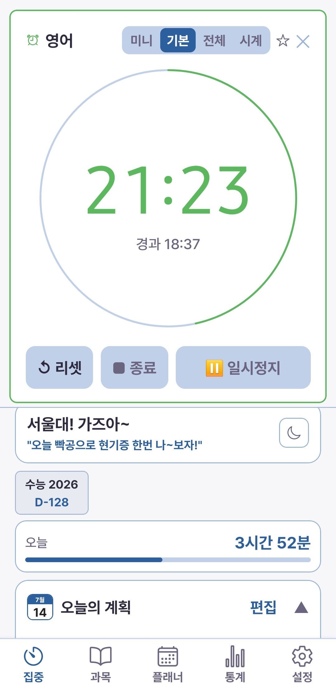
타이머·플래너·할 일·통계가 하나로 연결된 공부 앱.
공부가 끝나면 집중밀도 점수로 오늘 공부가 진짜였는지 알려줘요.

How it works
복잡한 설정 없이, 열고 누르면 바로 공부가 시작됩니다.
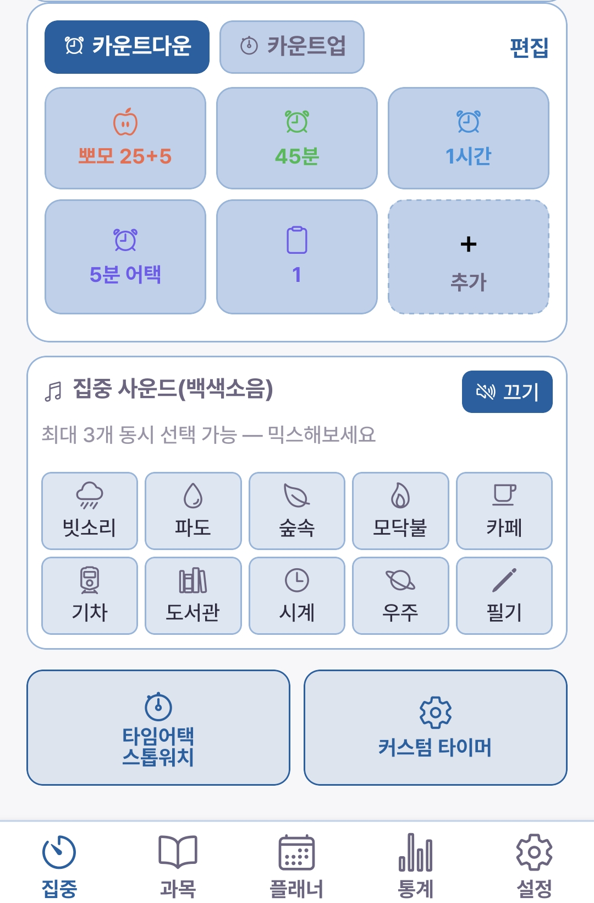
뽀모 25+5 · 45분 · 1시간… 원하는 타이머를 눌러 바로 시작하세요. 오늘 계획이나 할 일에서도 탭 한 번이면 됩니다.

집중 잠금이 화면을 덮어 폰 만지는 걸 막고, 앱을 벗어나면 즉시 알림으로 다시 불러옵니다.

끝나면 이번 공부의 집중밀도 점수와 등급이 바로 나옵니다. 기록은 통계와 잔디에 자동으로 쌓여요.
앱 둘러보기
앱 하단의 탭 5개가 공부의 전 과정을 담습니다. 아래 탭을 눌러 실제 화면과 함께 확인하세요.
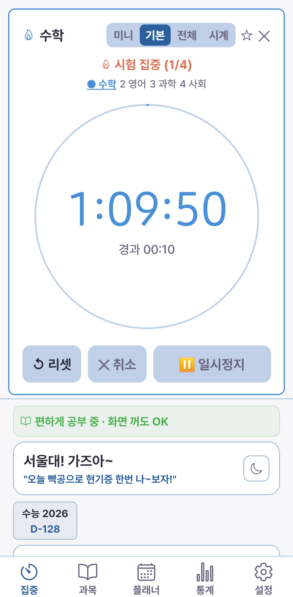
앱을 열면 보이는 홈 화면입니다. 오늘 공부량, 시험 D-Day, 오늘의 계획, 해야 할 일이 한 화면에 모여 있고, 어디서든 눌러서 바로 타이머를 시작합니다.
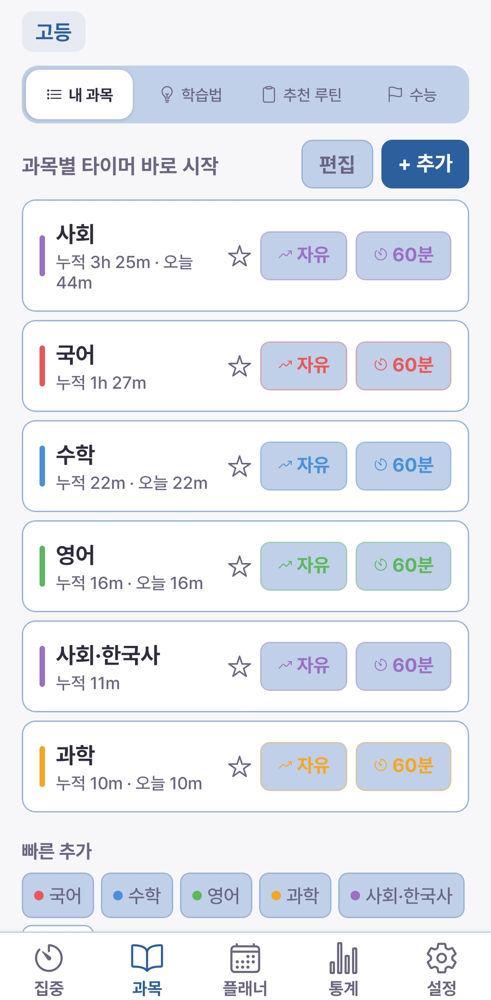
내 과목을 등록하면 과목마다 타이머를 원터치로 시작할 수 있고, 공부 시간이 과목별로 자동 누적됩니다.
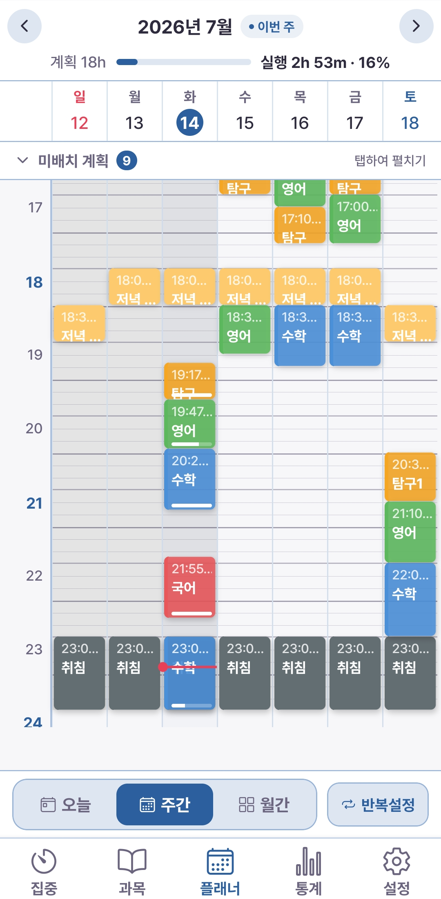
주간 시간표에 계획을 배치하면, 타이머로 공부한 실행량이 자동으로 계획에 연결됩니다. 달성률을 따로 적을 필요가 없어요.

얼마나 오래, 얼마나 몰입해서 공부했는지 일간·주간·월간·잔디로 분석합니다.
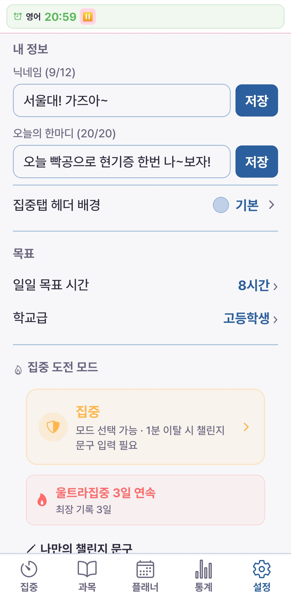
학년과 목표 시간을 설정하면 앱의 기준이 나에게 맞춰집니다. 테마부터 백업까지 여기서 관리해요.
왜 열공메이트인가
일시정지·이탈·완료율을 반영해 세션마다 집중도를 점수로 매깁니다. "몇 시간"이 아니라 "얼마나 몰입했는지"를 보여주는, 다른 타이머엔 없는 기능이에요.
공부 중 화면을 덮는 집중 잠금, 앱을 벗어나면 재촉하는 이탈 알림. iOS는 방해 앱 차단, Android는 화면 고정까지. 폰 잡는 습관을 끊어줍니다.
세운 계획과 실제 공부량이 자동으로 연결됩니다. 오늘·이번 주 계획 대비 달성률을 따로 적을 필요 없이 바로 확인하세요.
Focus Density
타이머를 멈추면 이번 공부의 집중밀도 점수가 나옵니다. 일시정지 횟수, 앱 이탈, 완료율, 집중 모드 등을 종합해 매기고, 등급으로 한눈에 보여줘요. 낙제 등급이 없어 계속하고 싶게 설계했습니다.
※ 집중밀도는 정해진 점수 공식으로 계산됩니다 (AI 아님).
Widgets
앱을 열지 않아도 오늘 공부·D-Day·오늘 계획을 확인하고, 위젯에서 바로 타이머를 시작하세요.
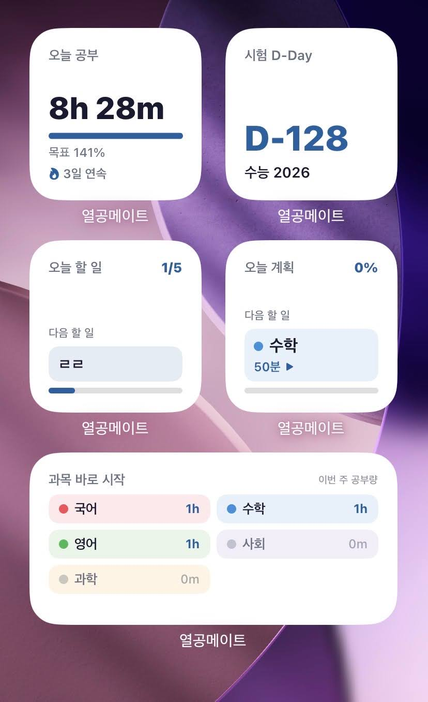

iOS는 잠금화면 위젯 · 실시간 카운팅 · Live Activity(Dynamic Island)까지 지원
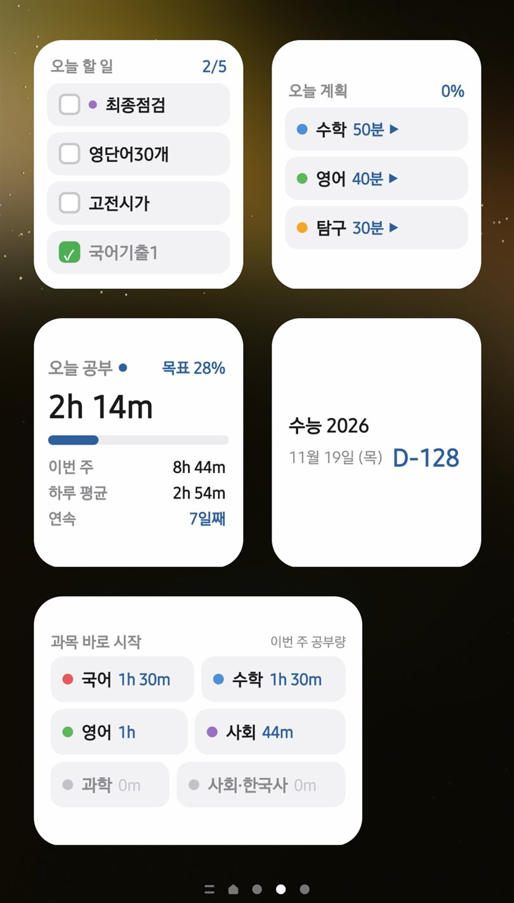
Android는 홈 화면 위젯 5종 · 오늘 할 일은 위젯에서 바로 체크 · 공부 중 실시간 '집중 중' 표시
Screenshots
앱 안의 화면은 iOS·Android가 동일합니다.
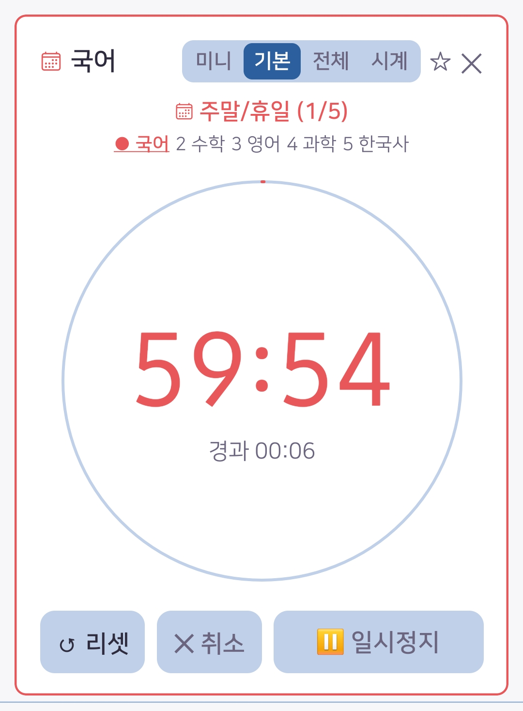


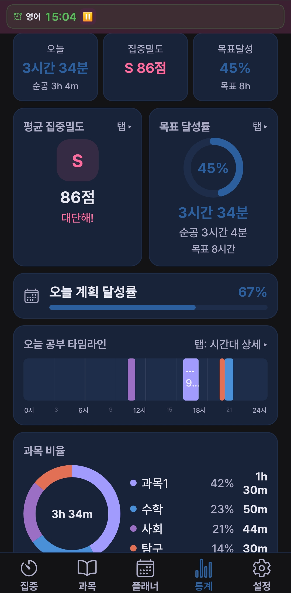
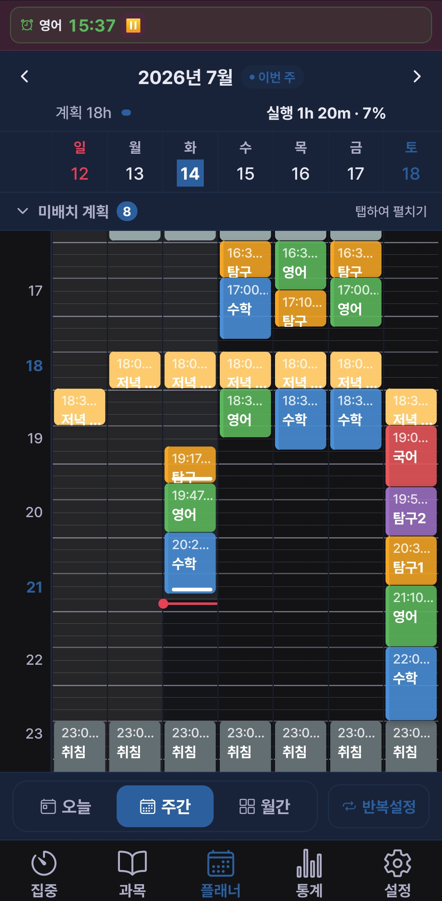

← 옆으로 밀어서 더 보기 →
Recommended
초등학생부터 공시생까지, 학년·목표에 맞춰 기준이 자동으로 조정됩니다.
FAQ
열공메이트는 공부 시간을 재는 것을 넘어, 집중밀도 점수로 몰입의 질까지 분석하는 공부타이머·공부플래너 올인원 앱입니다. 포모도로, 집중 잠금, 수능·시험 D-day 위젯, 잔디 통계를 한 앱에서 제공합니다.
네. 모든 기능이 무료이며 광고가 없습니다. 인앱결제도 없습니다.
네, App Store와 Google Play 모두 출시되어 있습니다. 앱 안의 화면은 두 플랫폼이 동일하고, 홈·잠금화면 위젯만 플랫폼별로 구성이 조금 다릅니다.
타이머 완주 여부, 일시정지 횟수, 앱 이탈 횟수, 집중 모드, 자가평가 등을 종합해 점수로 계산하고 SS(전설)~C 티어로 보여줍니다. 정해진 공식으로 계산되며 AI가 아닙니다.
iOS는 스크린 타임 연동 앱 차단으로 집중 중 선택한 방해 앱 실행을 막고, Android는 울트라집중에서 화면 고정으로 앱 전환 자체를 차단합니다. 잠금 강도(일반·집중·울트라집중)의 차이와 상황별 추천은 활용법 페이지에서 확인하세요.
설정 탭에서 데이터를 JSON으로 내보내고 가져올 수 있습니다. 기기 교체나 재설치 전에 백업을 권장합니다.
오늘 공부, 시간이 아니라 집중으로 확인해 보세요.